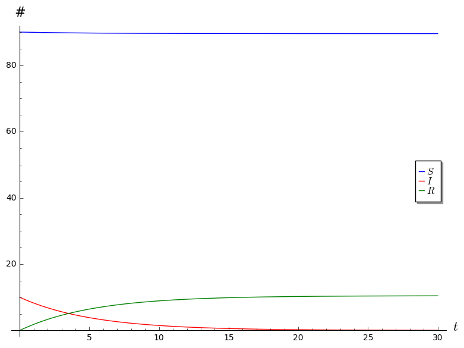

SIR Project Comments
- Part I
Question 2. I was looking for the observation that b and c are both forced to be between 0 and 1, together with some justification of this.
Question 3. I was looking for something along the lines of the following: Since \(S + I + R = N\) is constant, we have \(S' + I' + R' = 0\), which means that \(I' = - S' - R'\).
Question 5. All of you said that \(S \to 0\) as \(t \to \infty\). That's fine, and I didn't take off points for this, but this is not quite true: all that we know is that \(S\) must stabilize at some value between 0 and \(N\), but there is no guarantee that that value be 0. This will happen when the disease is not very virulent: recovery happens quickly (ie,\(c\) is large), and the disease speads slowly (ie, \(b\) is small). Here is a picture of this kind of situation. In this plot, we have \(c = 0.2\), \(b = 0.0001\), \(R(0) = 0\), and \(I(0) = 10\).

If we let \(S_\infty = \lim S(t)\), then what we know is that \(R \to N - S_\infty\) and \(I \to 0\) as \(t \to \infty\), because every infected person will eventually recover.
Question 6. I was looking for something along the following lines: Observe that [ = bSI - cI = b(S - )I. ] We know that \(b \geq 0\). If \(S(0) < c/b\), since \(S\) is monotonically decreasing, we know that \(S(t) < c/b\) for all \(t\). Thus \(S - c/b < 0\), so \(dI/dt < 0\), which means that \(I\) is monotonically decreasing.